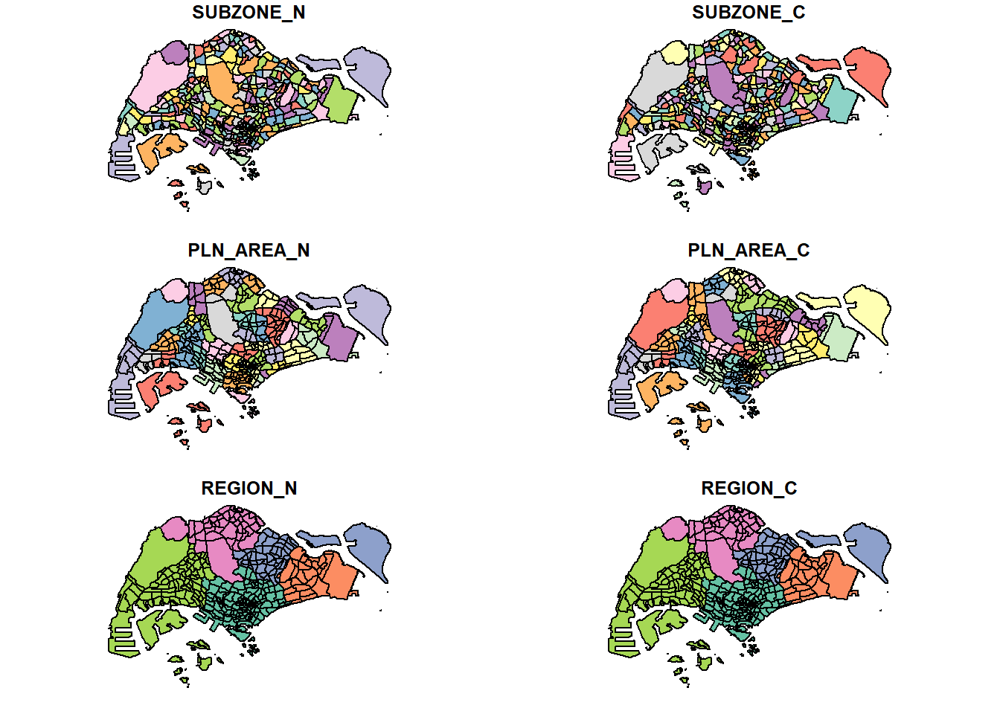

pacman::p_load(sf, tidyverse)1.1 Learning Outcome
Geospatial Data Science is a process of importing, wrangling, integrating, and processing geographically referenced data sets. In this In-Class exercise, you will learn how to perform geospatial data science tasks in R by using sf package.
By the end of this In-Class exercise, you should acquire the following competencies:
installing and loading sf and tidyverse packages into R environment,
importing geospatial data by using appropriate functions of sf package,
importing aspatial data by using appropriate function of readr package,
exploring the content of simple feature data frame by using appropriate Base R and sf functions,
assigning or transforming coordinate systems by using using appropriate sf functions,
converting an aspatial data into a sf data frame by using appropriate function of sf package,
performing geoprocessing tasks by using appropriate functions of sf package,
performing data wrangling tasks by using appropriate functions of dplyr package and
performing Exploratory Data Analysis (EDA) by using appropriate functions from ggplot2 package.
1.2 Data Acquisition
Data are key to data analytics including geospatial analytics. Hence, before analysing, we need to assemble the necessary data. In this In-Class exercise, you are required to extract the necessary data sets from the following sources:
- MPSZ on elearn
1.2.1 Extracting the geospatial data sets
Next, at the In-Class_Ex01 folder, create a sub-folder called data. Then, inside the data sub-folder, create two sub-folders and name them geospatial and aspatial respectively.
Place Master Plan 2014 Subzone Boundary (Web), Pre-Schools Location and Cycling Path zipped files into geospatial sub-folder and unzipped them. Copy the unzipped files from their respective sub-folders and place them inside geospatial sub-folder.
1.2.2 Extracting the aspatial data set
Now, you will extract the downloaded listing data file. At Downloads folder, cut and paste listing.csv into aspatial sub-folder.
1.3 Getting Started
Two R packages will be used. They are:
sf for importing, managing, and processing geospatial data, and
tidyverse for performing data science tasks such as importing, wrangling and visualising data.
Tidyverse consists of a family of R packages. The following packages will be used:
readr for importing csv data,
readxl for importing Excel worksheet,
tidyr for manipulating data,
dplyr for transforming data, and
ggplot2 for visualising data
Type the following code chunk.
1.4 Importing Geospatial Data
We will import the following geospatial data into R by using st_read() of sf package:
- `MP14_SUBZONE_WEB_PL`, a polygon feature layer in ESRI shapefile format,
- `CyclingPath`, a line feature layer in ESRI shapefile format, and
- `PreSchool`, a point feature layer in kml file format.1.4.1 Importing polygon feature data in shapefile format
The code chunk below uses st_read() function of sf package to import MP14_SUBZONE_WEB_PL shapefile into R as a polygon feature data frame. Note that when the input geospatial data is in shapefile format, two arguments will be used, namely: dsn to define the data path and layer to provide the shapefile name. Also note that no extension such as .shp, .dbf, .prj and .shx are needed.
mpsz = st_read(dsn = "C:/IS415-GAA/In-Class_Ex/In-Class_Ex01/data",
layer = "MPSZ-2019")Reading layer `MPSZ-2019' from data source
`C:\IS415-GAA\In-Class_Ex\In-Class_Ex01\data' using driver `ESRI Shapefile'
Simple feature collection with 332 features and 6 fields
Geometry type: MULTIPOLYGON
Dimension: XY
Bounding box: xmin: 103.6057 ymin: 1.158699 xmax: 104.0885 ymax: 1.470775
Geodetic CRS: WGS 84There are a total of 332 multipolygon features and 6 fields in mpsz simple feature data frame. mpsz is in WGS84 projected coordinates systems.
1.5 Checking the Content of A Simple Feature Data Frame
In this sub-section, you will use different ways to retrieve information related to the content of a simple feature data frame.
1.5.1 Working with st_geometry()
The column in the sf data.frame that contains the geometries is a list, of class sfc. We can retrieve the geometry list-column in this case by mpsz$geom or mpsz[[1]], but the more general way uses st_geometry() as shown in the code chunk below.
st_geometry(mpsz)Geometry set for 332 features
Geometry type: MULTIPOLYGON
Dimension: XY
Bounding box: xmin: 103.6057 ymin: 1.158699 xmax: 104.0885 ymax: 1.470775
Geodetic CRS: WGS 84
First 5 geometries:MULTIPOLYGON (((103.8802 1.283859, 103.8802 1.2...MULTIPOLYGON (((103.8376 1.295599, 103.8377 1.2...MULTIPOLYGON (((103.8341 1.292476, 103.8341 1.2...MULTIPOLYGON (((103.7125 1.291625, 103.7126 1.2...MULTIPOLYGON (((103.8472 1.297, 103.8473 1.2969...1.5.2 Working with glimpse()
Beside the basic feature information, we also would like to learn more about the associated attribute information in the data frame. This is the time you will find glimpse() of dplyr. very handy as shown in the code chunk below.
glimpse(mpsz)Rows: 332
Columns: 7
$ SUBZONE_N <chr> "MARINA EAST", "INSTITUTION HILL", "ROBERTSON QUAY", "JURON…
$ SUBZONE_C <chr> "MESZ01", "RVSZ05", "SRSZ01", "WISZ01", "MUSZ02", "MPSZ05",…
$ PLN_AREA_N <chr> "MARINA EAST", "RIVER VALLEY", "SINGAPORE RIVER", "WESTERN …
$ PLN_AREA_C <chr> "ME", "RV", "SR", "WI", "MU", "MP", "WI", "WI", "SI", "SI",…
$ REGION_N <chr> "CENTRAL REGION", "CENTRAL REGION", "CENTRAL REGION", "WEST…
$ REGION_C <chr> "CR", "CR", "CR", "WR", "CR", "CR", "WR", "WR", "CR", "CR",…
$ geometry <MULTIPOLYGON [°]> MULTIPOLYGON (((103.8802 1...., MULTIPOLYGON (…1.5.3 Working with head()
Sometimes we would like to reveal complete information of a feature object, this is the job of head() of Base R. In this case we will look at the first 5 rows of mpsz
head(mpsz, n=5)Simple feature collection with 5 features and 6 fields
Geometry type: MULTIPOLYGON
Dimension: XY
Bounding box: xmin: 103.6537 ymin: 1.216215 xmax: 103.8811 ymax: 1.29742
Geodetic CRS: WGS 84
SUBZONE_N SUBZONE_C PLN_AREA_N PLN_AREA_C REGION_N
1 MARINA EAST MESZ01 MARINA EAST ME CENTRAL REGION
2 INSTITUTION HILL RVSZ05 RIVER VALLEY RV CENTRAL REGION
3 ROBERTSON QUAY SRSZ01 SINGAPORE RIVER SR CENTRAL REGION
4 JURONG ISLAND AND BUKOM WISZ01 WESTERN ISLANDS WI WEST REGION
5 FORT CANNING MUSZ02 MUSEUM MU CENTRAL REGION
REGION_C geometry
1 CR MULTIPOLYGON (((103.8802 1....
2 CR MULTIPOLYGON (((103.8376 1....
3 CR MULTIPOLYGON (((103.8341 1....
4 WR MULTIPOLYGON (((103.7125 1....
5 CR MULTIPOLYGON (((103.8472 1....1.6 Plotting the Geospatial Data
In geospatial data science, by looking at the feature information is not enough. We are also interested to visualise the geospatial features.
plot(mpsz)